SEASON PERFORMANCE
Official Tournament Results & Full Schedule
2026 Freshman Spring Season
2025 Freshman Fall & Winter Off-Season Log
Official Competition Records & WAGR Metrics
Winter Special Event Record
Recorded separately from the NCAA Division I regular-season event sequence.
2025 Freshman Fall Season
Freshman Season Key Metrics
Clippd
Archived Freshman-Season Data
|
Completed 2025–26 Freshman Record
INDIVIDUAL METRICS
Individual Scoring Avg.
- (Clippd Adj.)
Raw Avg: -
STATUS: -Round Cumulative
Scoring Summary
- Under Par
Out of - Rounds
STATUS: -Round Cumulative
Academic Discipline
- GPA
Fall 2025 Semester
METRIC: Fall Finalized
COMPETITIVE & TEAM METRICS
Head-to-Head Record
-
Win Rate: -%
STATUS: -Round Cumulative
Counting Score Record
-%
Counting Score
Counting Score
Metric: - Rounds Recorded
Points Share (Clippd)
(w) Points
-
Team Total
-
Scope
- Rounds
STATUS: -Round Cumulative
OFFICIAL RANKS & PERFORMANCE
WAGR Rank
-
-
World Amateur Golf Ranking
As of -
Clippd NCAA Rank
-
-
Official NCAA Division I Ranking
As of -
Performance Profile
Wins
-
Top 3
-
Top 10
-
- NCAA Tournaments Cumulated
Data Point Note
Archived metrics and rankings are updated after round or event completion as reported by Clippd and WAGR. Current rankings may vary due to ongoing system recalibration and field adjustments.
All performance metrics and rankings are based on official data from Scoreboard.Clippd and WAGR.
Live scoring is available through official channels during tournament play.
Current Focus
Technical Log
Posted On: Apr 29, 2026
01
Technical Notes (Field-Relative)
Championship Baseline: Hong closed the 2026 American Conference Men’s Golf Championship with a final-round 69 after opening with consecutive rounds of 73, finishing T21 at 1-under par.
Final-Round Correction: The final round was not built on an unusual putting spike. The post-round evaluation was simple: “Putts weren't going in today, but it was still okay.” The scoring improvement came from a cleaner round structure, fewer large costs, and better management through the difficult 10–18 stretch.
Scoring Window: The primary scoring window came on holes 4–6, where the round created and converted enough value to separate the final day from the first two rounds.
Driving Profile: Across the championship, driving remained the strongest part of the profile. The Golf Metrics report showed strong driving value, high fairway accuracy, and no penalty-stroke pattern.
Putting Conversion: Putting remained functional, especially inside 11 feet, but longer putts were not a major scoring source. The final-round improvement therefore reads more as a cost-control correction than a putting-driven outlier.
Approach-Cost Pattern: The main technical focus remains approach-cost control. The 100–149 yard range continued to perform as a scoring strength, while the 150–199 yard and longer approach ranges created the most measurable scoring cost during the week.
Recovery Efficiency: When greens were missed, the next priority is improving recovery efficiency and limiting score leakage. The focus is not changing the profile, but making missed approaches less expensive.
Immediate Priority: Preserve the driver value, wedge-range scoring strength, and high counting reliability while reducing the cost of mid-iron misses and missed-green recovery situations.
02
Competitive Status & Next Technical Focus
Competitive Status: The championship result was not a high individual finish relative to the season standard, but the final round provided a cleaner closing sample after two inefficient opening rounds.
Technical Reset: The next phase remains centered on reducing approach-related cost while keeping the strongest parts of the profile intact: controlled driving, wedge-range scoring, and cleaner round structure.
Academic Follow-Through: With the competitive season complete, the immediate non-tournament focus shifts to closing the semester properly: completing delayed coursework, preparing for final exams, and finishing the freshman academic year with the same discipline required during competition.
Inserted Focus Note
Current Focus — Post-Championship Technical Review
Final-Round Correction — Technical Memo
Maintain driver value and penalty-free tee-shot structure
Preserve 100–149 yard scoring strength
Reduce cost from 150–199 yard and longer approach ranges
Improve recovery efficiency after green misses
Close the semester through delayed coursework, final exam preparation, and disciplined academic follow-through
Lower round cost without forcing scoring through putting variance
Beyond the Scorecard
Committed to USC Men’s Golf — Next Collegiate Chapter Confirmed
Confirmed Status Update
After completing his freshman season at UTSA and entering the NCAA Transfer Portal on June 4, 2026, Joshua Hong has committed to USC Men’s Golf for the next stage of his collegiate and athletic development.
This update marks the conclusion of Joshua’s transfer decision process and the beginning of his next collegiate chapter with USC Men’s Golf.
Joshua is grateful to Coach Hankins, Coach Lapa, and the USC Men’s Golf staff for their confidence and vision for his continued development.
He also remains thankful to Coach Matt Wernecke, the UTSA Men’s Golf staff, and his teammates for a meaningful freshman season at UTSA.
The completed UTSA freshman season will remain available on this site as a factual archive of Joshua’s NCAA production, tournament results, scoring data, and lineup reliability.
Additional administrative updates related to the transition may be reflected here when appropriate.
Status Note: USC Men’s Golf commitment confirmed June 4, 2026 ·
Administrative transition steps continuing · Posted On: June 4, 2026
Beyond the Scorecard
Official Portal Listing Confirmed — Next Stage Begins
Confirmed Status Update
UTSA Compliance confirmed that Joshua was entered into the NCAA Transfer Portal on June 4, 2026, at 8:00 a.m. His completed freshman-season profile is now available for NCAA program review.
After completing his freshman season at UTSA and following the institutional compliance process, Joshua is now officially listed in the NCAA Transfer Portal.
The next stage will involve appropriate communication with NCAA programs during the men’s golf transfer window.
The decision process will focus on identifying the right environment for Joshua’s next stage: one aligned with his academic path, team culture, competitive growth, and long-term player development.
Joshua remains grateful for his freshman year at UTSA, the opportunity to compete as a Roadrunner, and the coaches, staff, and teammates who were part of his first Division I season.
Confirmed updates and the final outcome of this process will be posted here when appropriate.
Status Note: NCAA Transfer Portal listing confirmed June 4, 2026, 8:00 a.m.
· Next-stage program review and communication may proceed · Posted On:
June 4, 2026
Beyond the Scorecard
Direct Coach Communication — Portal Entry Scheduled
Following the completion of the 2025–26 season, Joshua closed his freshman year at UTSA through direct coach communication and the proper institutional transfer process.
On Monday, May 11, after the season had concluded, Joshua spoke directly with Head Coach Matt Wernecke during the first available season-ending team meeting slot. He communicated that he was seriously considering his future direction and the transfer process, with the purpose of speaking with the coaching staff first, remaining transparent, and allowing any next steps to proceed in the proper order.
During the following days, Joshua and the coaching staff discussed both the possibility of remaining at UTSA and the importance of making the decision carefully. Joshua expressed appreciation for the program and, after speaking with his family, communicated his final decision directly to Coach Matt on the evening of Thursday, May 14.
On Friday, May 15, Joshua began the formal university compliance process and submitted his written transfer request through the proper institutional channel. On Wednesday, May 20, UTSA Compliance confirmed that Joshua was scheduled for NCAA Transfer Portal entry on June 4, 2026, at 8:00 a.m., the first day the men’s golf transfer window opens.
During that process, Joshua confirmed that the coaching staff had already been informed directly before the compliance steps moved forward. Coach Matt later indicated that, once Joshua entered the portal, he would be willing to help with recommendations if needed.
After Joshua communicated his final decision, teammate communication remained private and respectful. Joshua also acknowledged his next step publicly with a brief thank-you message to UTSA and a team photo.
Joshua’s freshman season at UTSA remains a meaningful and positive part of his development. He is grateful for the opportunity to compete at UTSA, for the coaches and staff who worked with him, for his teammates, and for the competitive experience he gained during the year.
At this stage, the required student-side transfer steps have been completed, UTSA Compliance has confirmed the scheduled portal entry, and Joshua is prepared for his completed freshman-season record to be reviewed by college programs once he is listed in the NCAA Transfer Portal on June 4, 2026, at 8:00 a.m.
Status Note: Direct coach communication completed May 11–14 · Written
request submitted May 15 · Portal entry confirmed May 20 · Portal entry
scheduled June 4, 2026, 8:00 a.m. Posted On: May 22, 2026
Beyond the Scorecard
Freshman Season Review — Completed First-Year Division I Season
The completed freshman season now stands as a full first-year Division I results record within UTSA Men’s Golf.
Across 33 rounds, Hong’s season included a UTSA debut top-10, an individual win, a team-title contribution, a new UTSA single-season scoring average record, two program-record ties, 32 counting scores in 33 team rounds, 19 par-or-better rounds, American Conference Men’s Golf Player of the Week recognition, and UTSA Athletics recognition at The Rowdys.
The season is best read as more than a results summary. It was also a first-year adjustment period involving team qualifying, travel rhythm, academic responsibility, physical development, changing course styles, weather variation, and the weekly responsibility of producing countable team scores.
Following the fall schedule, the Patriot All-America Invitational provided a competitive reference point outside the NCAA team schedule before technical work shifted toward driver and long-iron dispersion, scoring structure, and preparation for spring qualifying.
The fall schedule established an early college baseline, including immediate top-10 production in his UTSA debut, while also identifying areas that still required stabilization. The spring season showed a more complete scoring profile, highlighted by a T3–1–3 stretch, a first collegiate individual title, program-record scoring markers, and continued team-score reliability.
The AAC Championship did not produce his strongest finish of the year, but it completed the season with another three counting rounds and a final-round 69 that preserved the broader freshman-season profile.
From a development standpoint, the year created a clearer map of the next work areas: maintaining the scoring floor, preserving team reliability, reducing round-cost from approach and recovery positions, and improving conversion efficiency when scoring opportunities are created.
The full freshman-year record now stands as the reference point: a season defined by verified production, low round-collapse risk, record-level scoring, and measurable development areas beyond the first year of college competition.
Posted On: May 9, 2026
Beyond the Scorecard
Final-Round Correction, Season Profile Preserved
The AAC Championship did not produce Hong’s highest individual finish of the season, but the week closed with a clear final-round response.
After opening with consecutive rounds of 73, Hong remained countable for the team and closed with a final-round 69 to finish T21 at 1-under par.
The first two rounds required adjustment. The scorecards showed enough scoring opportunities, but the round cost was higher than needed when approach misses and recovery situations turned into dropped shots.
The final round showed a cleaner structure. Hong played the difficult 10–18 stretch at even par, moved under par through the 1–6 sequence, converted both par-5 opportunities on holes 4 and 6, and closed 7–9 with three pars to protect the 69.
That round brought the championship total to 1-under par and gave the week a more balanced finish after two higher-cost opening rounds.
The week also reinforced his season-long reliability. Hong counted in all three championship rounds and finished the season with a counting score in all but one team round.
The next stage remains clear: preserve the driver value, wedge-range scoring, and birdie production while continuing to reduce scoring cost from mid-iron approach misses and recovery positions.
The championship was not the strongest finish of his season, but the final-round correction helped complete a freshman campaign defined by team-leading production, high counting reliability, and a new UTSA single-season scoring average record.
Posted On: Apr 29, 2026
Beyond the Scorecard
Relative to the season standard, this was an unusually poor week. Scoring never developed normal rhythm, birdie conversion remained limited, and the result was shaped more by accumulated small losses than by one isolated mistake.
That made the week a useful reminder that college golf demands more than shot-making alone. Competitive performance is shaped not only by execution during the round, but also by how well the full week is managed before the first shot is hit.
In developmental terms, the tournament was one of the most useful weeks of the year. It exposed clear deficiencies, removed ambiguity, and clarified which parts of the competitive process still require a higher level of control.
In that sense, the week offered more than the recent 3–1–3 stretch did. Strong finishes confirm progress, but difficult tournaments often reveal more about where the next level of improvement must come from.
The main value of the week was therefore diagnostic: it sharpened the focus on the areas that now require more precise work, particularly in preparation, conversion, and overall competitive control when scoring flow is harder to establish.
The objective now is simple: use that feedback well over the next three weeks and arrive at the AAC Championship better prepared, more precise, and competitively cleaner.
Posted On: Apr 8, 2026
Beyond the Scorecard
The event was played under high-temperature desert conditions with firm surfaces and fast greens, requiring precise distance control and early adaptation to surface speed and release patterns.
Across three rounds, the recorded scores were 73, 68, and 71, finishing at 4-under-par and inside the top 10 of a 96-player field.
The scoreline reflects partial conversion of available opportunities. Tee-to-green control remained consistent throughout the event, with repeated creation of birdie chances. However, a significant portion of those opportunities did not convert, particularly within makeable range.
The first round showed stable ball-striking with limited scoring return due to reduced putting efficiency. The second round reflected improved confidence on the greens and produced a lower score. The final round began with early scoring but returned to lower conversion rates despite continued control in ball striking.
Dry and high-temperature conditions remained a management factor throughout the event.
From a performance perspective, the event presents a clear separation between opportunity creation and scoring output. The underlying ball-striking level supported a lower scoring range than the final result indicates. The primary limiting factor was not approach instability but conversion efficiency on the greens, creating a gap between performance indicators and recorded score.
Posted On: Mar 24, 2026
Beyond the Scorecard
Tucson Country Club (Par 72, 7,533 yards) presented an upper-tier Division I setup with narrow fairways, small fast greens, and firm surfaces that reduced stopping power into targets. Standard approach shots often released through or off the green, requiring front-edge landing patterns and controlled run-out adaptation.
Pre-event preparation was affected by cold symptoms after practicing in cold rain before travel. Symptoms were managed with medication. Earlier arrival in Tucson supported time-zone adjustment, altitude adaptation, and general recovery. The draw also created a difficult tournament rhythm, with a late-wave assignment in the 36-hole day, suspended-round risk, early restart, and immediate final-round transition.
Dry desert conditions created additional physical stress, including two nosebleeds and breathing discomfort, which were managed with staff support. Given the draw, schedule, and first-time exposure to this course style, the working scoring target entering the event was even par over 18 holes.
The latest event in the sequence concluded at 72, 76, and 73 over three rounds. The overall result did not fully represent the underlying tee-to-green sample. By the final round, green adaptation and ball striking were materially better, with 16 greens in regulation and enough birdie opportunities to produce a lower score than the card ultimately showed.
Driver and long-iron dispersion continued to trend positively. Iron precision and wedge feel were improved relative to prior events. The main scoring separator was putting conversion rather than approach instability, with multiple short- and mid-range birdie looks not converting.
In analytical terms, this event is more useful as a context-heavy performance sample than as a simple scoreline entry. The result sits below the quality of several underlying control indicators, especially late in the week, and is best read as a demanding desert-course adjustment sample rather than a full reflection of current ball-striking level.
Posted On: Mar 17, 2026
Beyond the Scorecard
Venue & Conditions: The CC at The Golden Nugget (Par 72, 6,906 yards). The layout required navigation of penalty areas and management of Bermuda grain on approach shots and putting surfaces. A structural issue in the driver head was identified during the practice round and monitored throughout; ball speed and launch parameters remained stable.
Scoring Record:
Round 1: 64 (−8) — Tied UTSA program record for lowest single round. Multiple birdie/eagle opportunities created.
Round 2: 70 (−2) — Part of 36-hole day. Nutritional intake structured at regular intervals to stabilize concentration.
Round 3: 69 (−3) — Bogey-free final round. Several mid-range par saves preserved scoring position.
Total: 203 (−13).
Final Result & Rank Impact:
Position: Solo 3rd (1 stroke from 2nd, 3 strokes from 1st) | Team: 2nd Place.
Clippd National Rank: 311 (▲43) | WAGR: 425 (▲81).
Technical Metrics: Driver and long-iron dispersion remained within controlled parameters. Proximity control was stable relative to course setup. Scoring efficiency limited by putting variance under Bermuda conditions rather than approach dispersion.
Post-Event Status: Preparation transitions to Arizona event (D-14). Technical focus on short-game proximity refinement and putting consistency. Academic responsibilities addressed following return travel.
Posted On: Mar 4, 2026
Beyond the Scorecard
Temperature declined prior to competition, and Round 1 was delayed approximately one hour due to frost. Wind gusts approached 25 mph throughout the event. The course at TPC San Antonio — The Canyons Course (Par 72, 7,106 yards) was set at PGA-level yardage, green speed, and pin positioning.
Round 1 concluded at 69 (−3), establishing the lead. The field scoring average was 76.16. Round 2 concluded at Even Par, moving to −3 cumulative and second position entering the final round. Round 3 was played under continued wind and firm conditions, with the field scoring average rising to 79.03. The tournament concluded at −1.
Joshua finished as Individual Champion and contributed to the Team Championship as the only player under par.
National ranking adjusted from No. 406 to No. 354 (▲52).
Driver and long-iron dispersion remained stable relative to wind exposure. Minor proximity variance was observed under crosswind conditions. Greenside execution remained functional. Putting adaptation variance was noted under tournament-speed greens.
Post-event review of Clippd and WAGR metrics indicated a narrower ranking differential relative to observed field scoring dispersion. Preparation transitions to Golden Nugget Invitational, with midweek allocated to academic completion and technical calibration.
Technical calibration remains focused on tournament continuity.
Posted On: Feb 25, 2026
Beyond the Scorecard
Travel began before 4:00 a.m., including ground transportation from San Antonio to Austin, followed by connecting flights through Dallas to Cancun. Upon arrival, preparation focused on course and putting green familiarization ahead of competition.
Round 1 was played in high-wind conditions. Driver accuracy varied, while scoring was maintained through short-game execution. The round concluded at 70 (-2).
In Round 2, driver dispersion affected play, including an early double bogey. Birdies on the front nine were followed by dropped strokes on the back nine. Scrambling limited further score impact. The round concluded at 75 (+3).
Round 3 showed improved driver alignment under continued wind conditions. The round concluded at 71 (-1).
Joshua finished the tournament at Even Par, placing T3, with only two players ahead.
As a result, his national ranking moved from No. 523 to No. 403.
Preparation continues with ongoing driver accuracy calibration.
Posted on: Feb 4, 2026
Beyond the Scorecard
January training was structured around refining long-iron dispersion and reinforcing short-game execution, with the objective of stabilizing scoring opportunities from mid-to-long range.
Performance during the Jan 22–23 qualifying rounds (R1–R2) reflected improved ball-striking consistency under competitive conditions. During Round 3, a separate data point was recorded as Joshua tested aggressive driving lines on the Oaks Course in a high-margin scenario. This round provided useful feedback on driver control and decision-making under full-power execution.
A corrective training session followed on Jan 29 at TPC San Antonio, focusing on driver alignment and short-game touch to recalibrate feel and reestablish R1–R2 performance benchmarks.
Preparation continues with the goal of entering the Spring season fully calibrated and ready to contribute consistently across all competitive rounds.
Posted on: Jan 26, 2026
Performance Archive
The Patriot All-America Invitational served as a competitive reference point against a national amateur field, including several of the top collegiate players. Following the event, a technical review identified long-iron performance as an area for improvement ahead of Spring qualifying.
In coordination with the UTSA coaching staff, a short-term adjustment was approved for Joshua to remain on campus and continue individual training during January rather than participate in the scheduled team trip.
This period was used to address identified technical areas prior to Spring qualifying rounds and subsequent team events. Joshua continues preparation within the UTSA program for the Spring season.
Posted on: Jan 10, 2026
Freshman Fall Season
The first month of college competition functioned as an adaptation sample rather than a settled baseline. From September qualifying through the first four tournament weeks in early October, the central task was not only scoring, but adjusting to the broader demands of the college competitive structure.
Qualifying established two early realities. First, the transition from junior golf required wider control across preparation, scheduling, and recovery. Second, finishing as the top player in the team entry process added early responsibility before the competitive routine had stabilized.
The debut at Argent Financial (LT) produced 70-70-69, finishing at 7-under-par and T9. The result showed that scoring was already possible at the college level, but it also clarified that the underlying game remained incomplete and several technical areas were still below a sustainable standard.
One week later at Highlands Invitational (ETSU), the event concluded at 74-71-70, finishing at 1-under-par and T12. By then, the demands of the transition period had become more visible. Schoolwork, travel, practice, and daily logistics were being absorbed simultaneously, while swing-speed and power work introduced sequence instability that had not yet been resolved.
The third straight event, Badger Invitational (TPC Wisconsin), was the first week in which ball-striking limitations became more evident inside competition. The tournament concluded at 71-71-76 for 2-over-par and T24. Consecutive tournament weeks, difficult weather, physical fatigue, and incomplete adaptation exposed how demanding the college schedule could become when multiple variables remained unsettled at the same time.
After a brief break, the final event of that opening run came at Trinity Forest (SMU), where ball-striking again remained below standard and scoring opportunities were limited. The week concluded at 75-73-74, finishing at 6-over-par and T55. By that stage, the first month had included 8 qualifying rounds plus 4 tournaments totaling 12 competitive rounds, for 20 rounds overall within a compressed adjustment window.
The value of that month was therefore diagnostic. It established an early scoring baseline and a clear list of deficiencies: incomplete swing stability, reduced driver and long-iron dispersion control, inefficient practice structure, and the difficulty of balancing competition with academic and daily-life demands during the transition period.
The next turning point came with the start of new work under Bryan Gathright. As the swing began to stabilize, it also became clearer that increased speed and power had introduced more dispersion than expected, particularly in the driver and long irons. That remained an active problem, but not a fixed limitation, making the next phase a period of structured correction rather than short-term management.
Posted on: Nov 16, 2025
WHAT'S IN THE BAG
Driver
Titleist GT3 (9.0°)
Ventus Black 6 TR (X)
VeloCore, Std Tip
VeloCore, Std Tip
Fairway Wood
Titleist GT3 (16.5°)
Ventus Black 6 TR (X)
VeloCore, Std Tip
VeloCore, Std Tip
Irons (Combo)
Titleist 620 MB & CB
4-6: CB | 7-PW: MB
Precision Forged
Precision Forged
Wedges
Vokey SM10 Nickel
46, 50, 54, 58 (M/F Grinds)
KBS C-Taper 125 S+
KBS C-Taper 125 S+
Putter
Phantom 9.5
Silver
Ball
Titleist Pro V1
JOURNEY IN PHOTOS
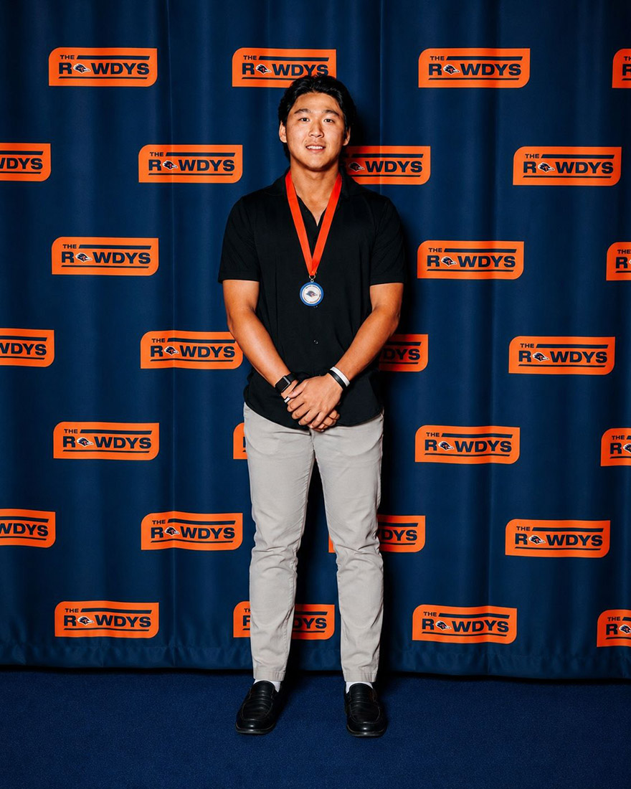
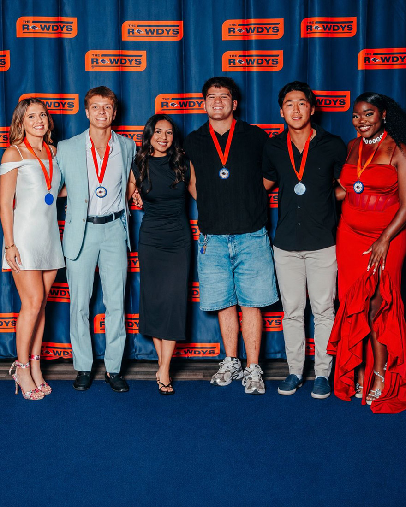
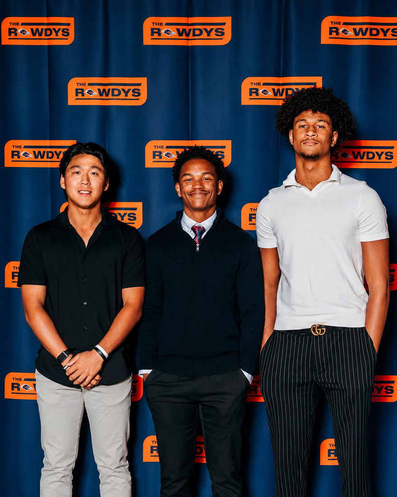
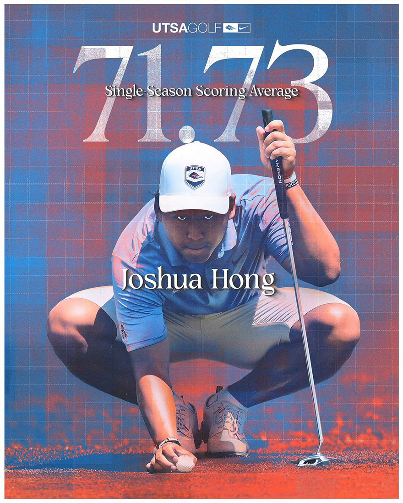
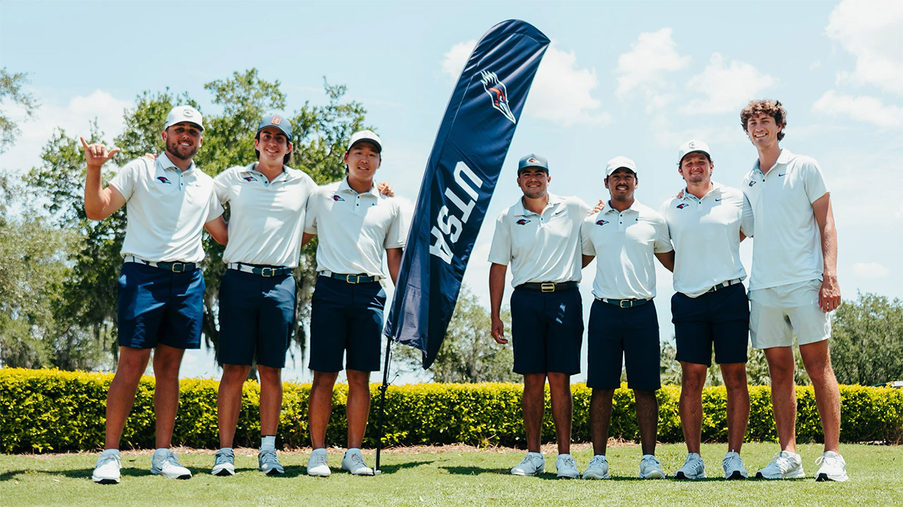
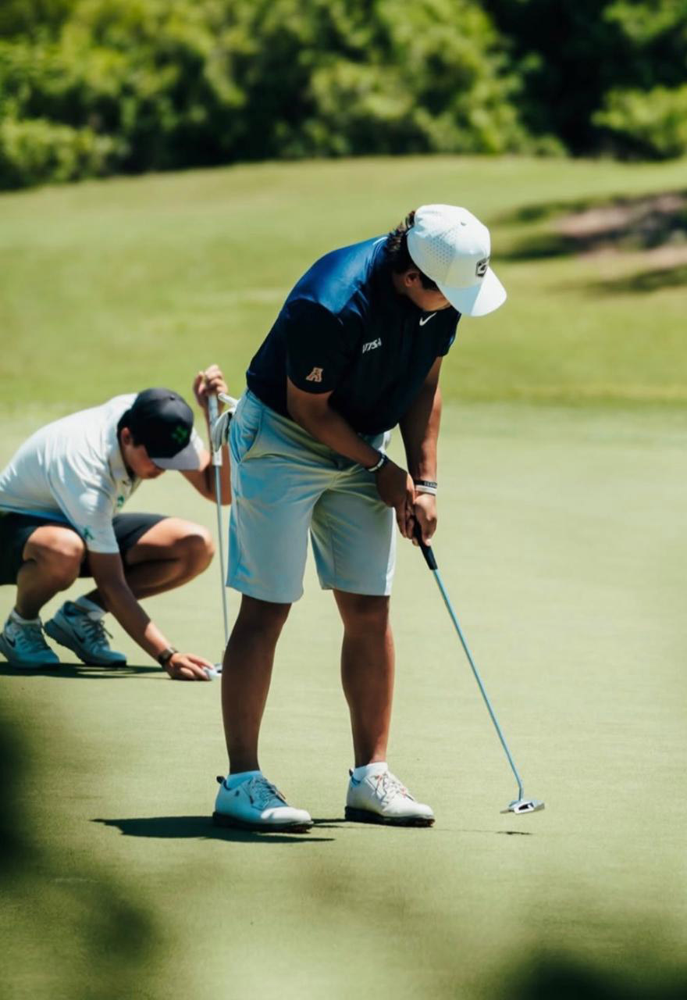
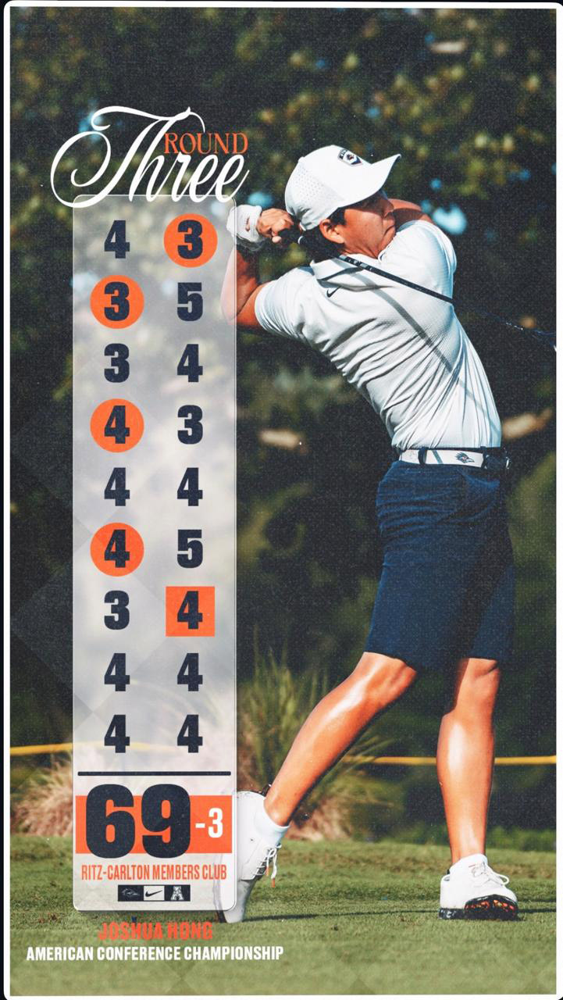
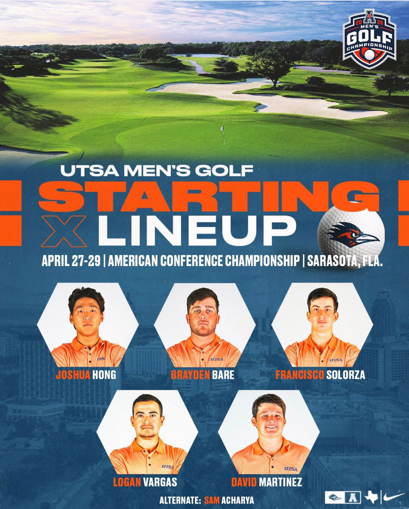
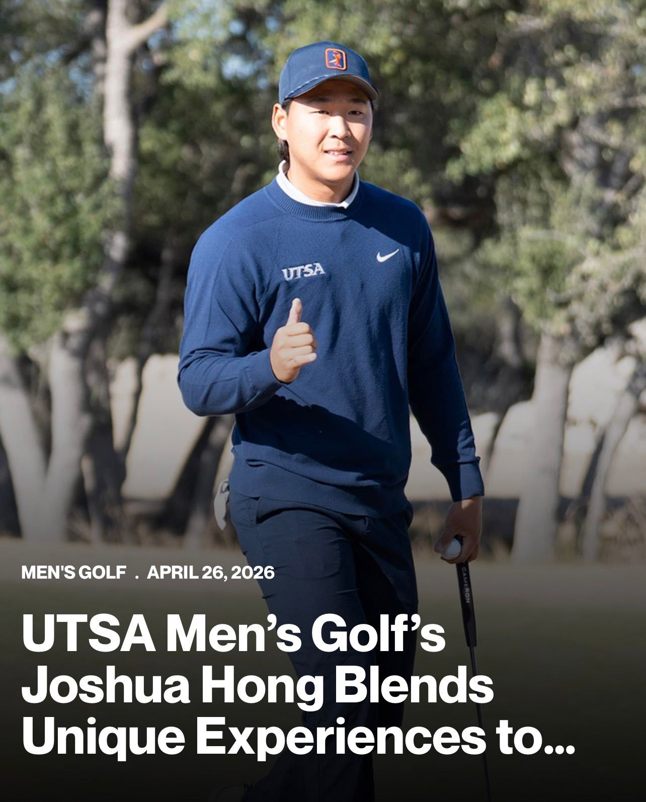
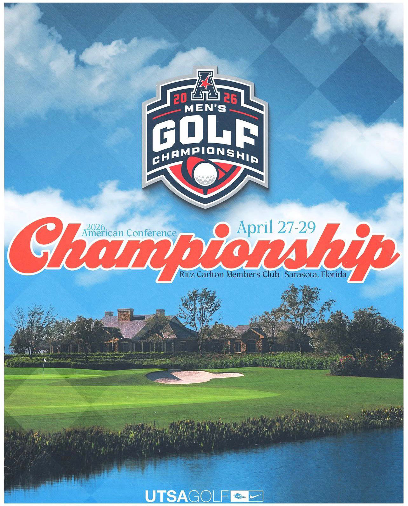
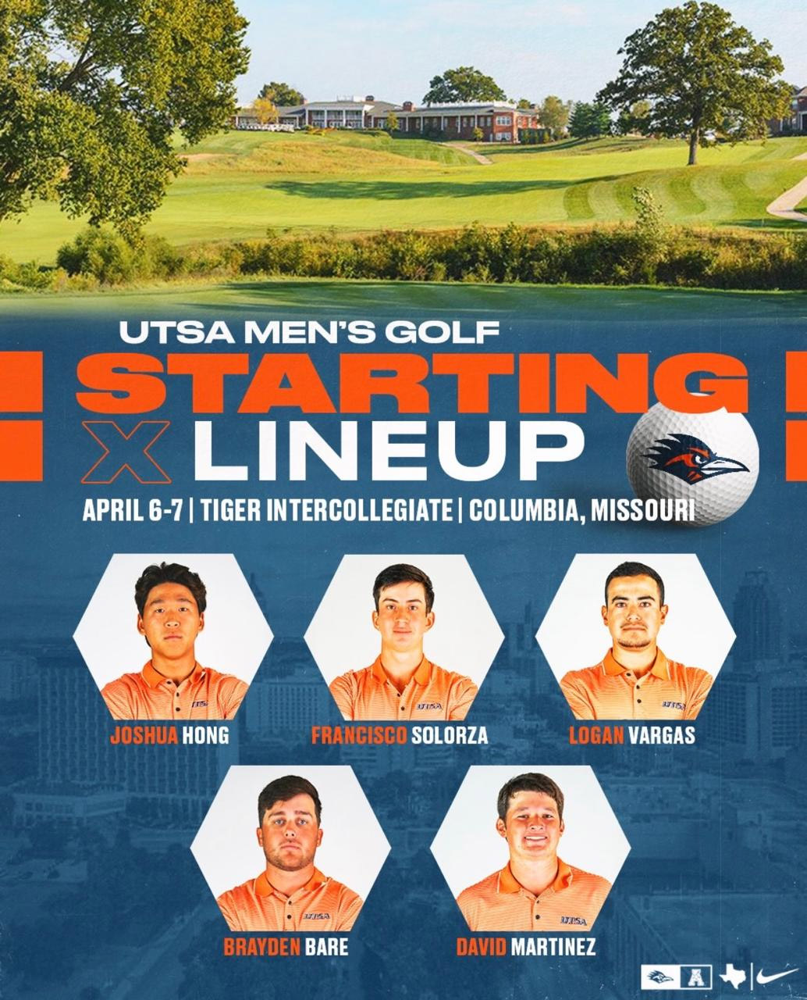
")


")
")

")


 during the freshman team photo day")


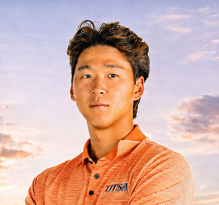
UTSA Official Player Profile
2025–26 Freshman Season
UTSA Roster Bio: Joshua Hong
Official UTSA roster bio documenting Hong’s completed freshman season, including the 71.73 single-season scoring average record, Military City Collegiate title, Golden Nugget 64 / 134 school standards, and conference recognition.
View Official Player BioAlso referenced in official UTSA staff bios
멕시코 한국인 골프 선수 자슈아 홍 (Joshua Hong Golf) 공식 기록 페이지
Performance Data
Official Records
This website is maintained solely as an independent personal record archive of Joshua Hong’s golf career. It is not commercial in nature and is not affiliated with, endorsed by, or operated by any university, athletic department, conference, or third-party brand. Images and materials are presented for personal archival and informational purposes only. All rights to third-party images and materials remain with their respective owners.